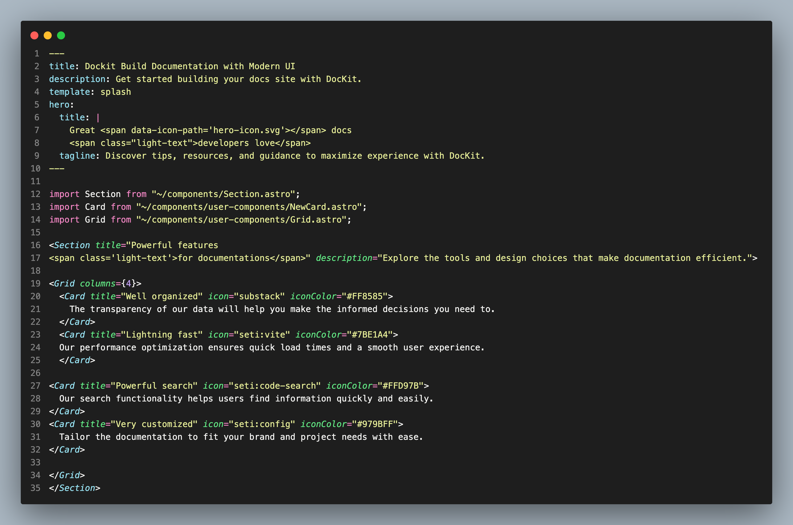

Well organized
The transparency of our data will help you make the informed decisions you need to.
Discover tips, resources, and guidance to maximize experience with DocKit.
Popular:
Explore the tools and design choices that make documentation efficient.
The transparency of our data will help you make the informed decisions you need to.
Our performance optimization ensures quick load times and a smooth user experience.
Our search functionality helps users find information quickly and easily.
Tailor the documentation to fit your brand and project needs with ease.
A fast and frustration-free way to set up and start your documentation.



Explore our featured topics and get an idea of our capabilities.

Dedicated toggle button to switch between dark and light mode.


Get answers to the general questions people have asked.
Simply install our template, import the components you need, and start documenting your project. The setup process takes just a few minutes.
This static version requires nothing but a modern web browser — no Node.js, no build step. The original Astro theme requires Node.js 18+ and supports all major operating systems.
Yes, Dockit is completely free and open source. You can use it for personal and commercial projects without any limitations.
Absolutely! Every color, font and spacing lives in CSS variables at the top of css/base.css. Change a few values and the whole site updates — no framework knowledge needed.
Open css/base.css and edit the custom properties inside :root (dark theme) and [data-theme="light"] (light theme). The primary color, gradients and backgrounds are all documented there.
Yes. All components are plain HTML + CSS: copy an existing block (cards, accordions, tabs…) from css/components.css and the homepage markup, then adapt it to your needs.
The menus are written directly in the HTML of each page (header <nav> and footer). Add, remove or reorder the <li> items — no configuration file involved.
Yes — the site is 100 % static: upload the folder to any hosting service (Netlify, Vercel, GitHub Pages, OVH, a simple FTP server…) and point your custom domain at it.
You can get help through GitHub discussions, the documentation itself, or the community Discord server. Email support is also available for complex issues.
Please report bugs through the GitHub issues page with detailed information about the problem and the steps to reproduce it.
While Dockit is free, premium consulting services are offered for custom implementations and enterprise deployments.
Discover tips, resources, and guidance to maximize experience with our documentation.